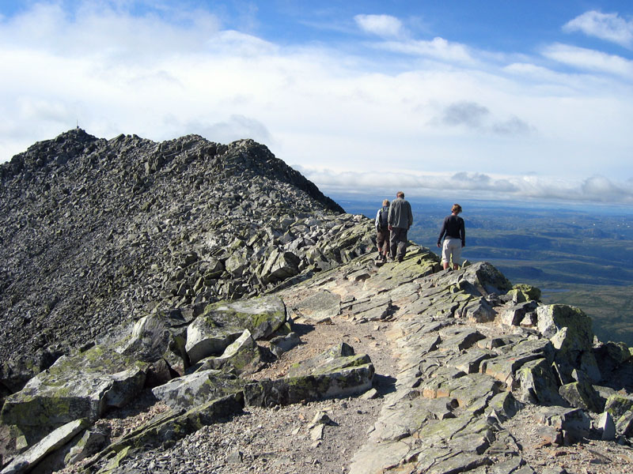
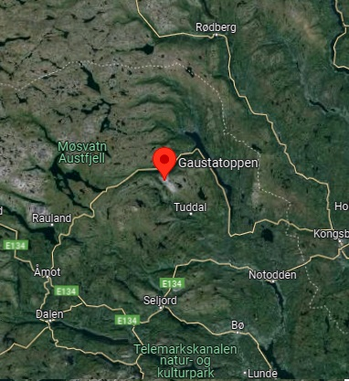
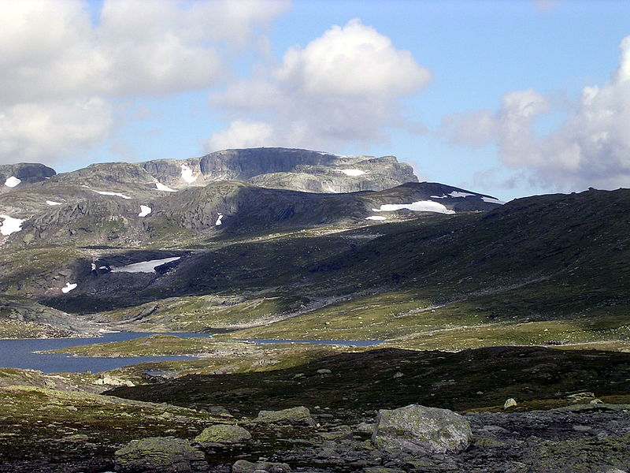
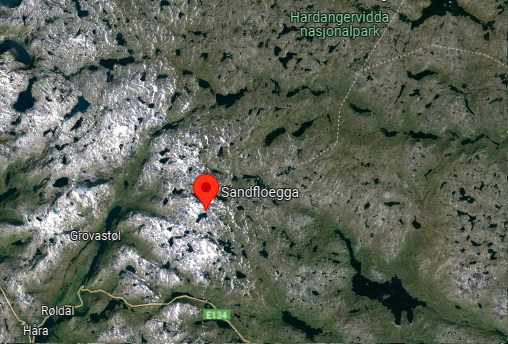
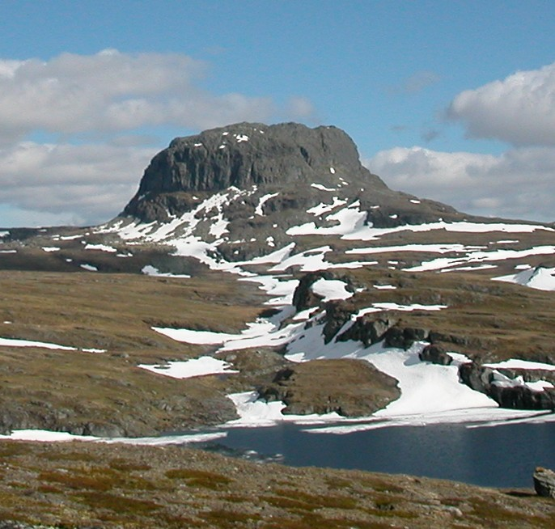
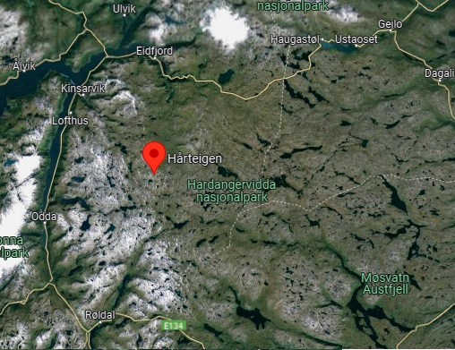

Return
Gaustatoppen
The 1,883-metre tall mountain 
59°51′15″N 8°38′57″E

Characteristics
The tallest mountain in all of Telemark county
The view from the summit is impressive
Popular for downhill skiing in the winter
The southwestern side of the mountain is very dangerous and inaccessiblee
Airplane crashes
Alpine ski areas and competitions
8 at List of highest points of Norwegian counties
Easy to get help
Various flight conditions
Low risk of lightnings
Strong, stable wind
Paragliding rating
★★★★★
Difficulty
★★★☆☆
Views
★★★★★
Safety due to the village nearby
★★★★☆
Adrenaline
★★★★☆
Temperature
★★★☆☆
Risk of lightnings
★★☆☆☆
Wind power
★★★★★
Sandfloegga
1,721-metre tall mountain 
59.9463°N 7.1454°E

Characteristics
The highest mountain on Hardangervidda
In southeastern Vestland county
Lies inside Hardangervidda National Park
Not for begginers
Lake and valley views
Low risk of lightnings
Wind may be unstable
Paragliding rating
★★★☆☆
Difficulty
★★★☆☆
Views
★★★★☆
Safety
★★★☆☆
Adrenaline
★★★☆☆
Temperature
★★★☆☆
Risk of lightnings
★★☆☆☆
Wind power
★★★★☆
Hårteigen
1,690 metres above sea level 
60.1931°N 7.0693°E

Characteristics
Mountain in Vestland county
Located in the municipality of Ullensvang
Inside the Hardangervidda National Park
For experienced paragliders
Limited access to help
Difficult terrain
Chilly
More lightnings in summer season
Strong and stable wind, perfect for paragliding
Paragliding rating
★★★★☆
Difficulty
★★★★☆
Views
★★★★★
Safety
★★★☆☆
Adrenaline
★★★★☆
Temperature
★★☆☆☆
Risk of lightnings
★★★☆☆
Wind power
★★★★☆